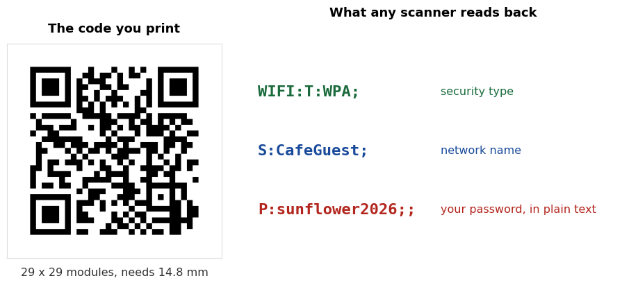

A WiFi QR code does something that looks like magic. A guest points a camera at a card on the table, taps once, and they are online. No password read aloud across a room, no typing a string of random characters on a phone keyboard.
Underneath, there is no magic at all, and the gap between how it feels and how it works is where every WiFi QR code problem comes from.
What is actually inside
A WiFi QR code holds one line of plain text in a small agreed format. That is the entire mechanism. Here is a real one, and what a scanner reads back from it:

Three fields, in a fixed order:
| Field | Means | Typical values |
|---|---|---|
T: | Security type | WPA, WEP, or nopass for an open network |
S: | Network name, the SSID | Exactly as it appears in your WiFi list |
P: | Password | In the clear, as typed |
One more field turns up sometimes, H:true, which tells the phone the network is hidden and will not appear in its list. We come back to that below.
That is the whole format. It is why every WiFi QR code generator produces the same code for the same network, and why a code made on one site scans identically to one made on another. There is nothing proprietary to get right.
Who can read your password
Anyone who can see the code.
Scan a WiFi QR code with a normal QR scanner rather than the camera's WiFi prompt, and the password appears as text on screen. Our own QR scanner will do it, and so will any other. No tools, no skill, no trick. The information was never protected; it was printed.
A photo is enough. Someone does not need to be near your network to read the password. A picture of the card taken across the room, or a photo of your printed sign posted in a review, carries the password with it. Treat a WiFi QR code exactly as you would treat the password written out in large letters, because that is what it is.
This is not a flaw in the format, and it is not something a better generator could fix. The phone has to learn the actual password in order to join the network, so the actual password has to be in the code.
What that means in practice
None of this makes WiFi QR codes a bad idea. It makes them a tool with one property worth knowing. Four practical consequences:
Use a guest network. This is the single most useful thing you can do. A guest network has its own password and, on most routers, keeps visitors away from the devices on your main network. Share the guest password freely and the main one never leaves your household. Our Airbnb guide walks through setting one up.
Think about where the code is visible from. A card on a café table is seen by customers. A sign in a window is seen by the street. Those are different audiences, and the second one includes people who will never buy anything from you.
Do not post a photo of it publicly. Hosts and cafés do this on social media without thinking, and it is the same as posting the password.
Change the password when you need to, and accept the reprint. A printed WiFi code cannot be updated. When the password changes, every printed copy becomes wrong. That is a reason to keep guest passwords stable and to avoid printing hundreds of cards you cannot easily replace.
What we measured: password length and code size
Because the password sits inside the code, a longer password makes a denser code that has to be printed larger. We measured this at error correction level M, with the network name CafeGuest, and the print size is the smallest usable width from the 0.4 mm per module floor plus the quiet zone.
| Password | Whole line | Grid | Smallest usable print |
|---|---|---|---|
| 4 characters | 31 chars | 29 x 29 | 14.8 mm |
| 8 characters | 35 chars | 29 x 29 | 14.8 mm |
| 13 characters | 40 chars | 29 x 29 | 14.8 mm |
| 15 characters | 42 chars | 29 x 29 | 14.8 mm |
| 28 characters | 55 chars | 33 x 33 | 16.4 mm |
| 40 characters | 67 chars | 37 x 37 | 18.0 mm |
| 63 characters, the WPA maximum | 90 chars | 41 x 41 | 19.6 mm |
The useful part is the top four rows. Anything up to about 15 characters produces the same code. QR codes grow in fixed steps rather than character by character, so a 15 character password costs exactly as much printed space as a 4 character one.
There is no reason to shorten a guest password for the sake of the code. A strong one is free until you cross a step boundary, and even the longest password the standard allows only takes the code from 14.8 mm to 19.6 mm.
Error correction moves it more than the password does. The same 13 character password gives 29 x 29 at level L or M, 33 x 33 at Q, and 37 x 37 at H. Level M is the sensible default for a card or a sign. Level H is worth it if you are putting a logo in the middle, which our customiser handles.
The character that breaks it silently
Look at the format again and you will see that ; separates the fields. So what happens when the password itself contains a semicolon?
We tested it. A password of pa;ss written straight into the line produces WIFI:T:WPA;S:CafeGuest;P:pa;ss;;, and a phone reading that sees the field ending at the semicolon. It reads the password as pa.
| Your password | Written straight in | Written correctly |
|---|---|---|
pa;ss | Phone reads pa | Phone reads pa;ss |
pa\ss | Phone reads pass | Phone reads pa\ss |
My;Cafe,2026 | Phone reads My | Phone reads My;Cafe,2026 |
The fix is to put a backslash in front of those characters, which tells the reader they are part of the text rather than the structure. The characters that need it are ; , : \ and ".
What makes this worth a section of its own is how it fails. The code generates without complaint. It scans without complaint. The phone offers to join the network, and then the connection fails, because it is trying a password that is missing everything after the semicolon. Nothing anywhere tells you why. This is high on the list of reasons behind a WiFi QR code that will not connect.
We tested our own tool on this. Passwords containing ;, , and \, plus network names containing ;, plus an accented SSID. Six cases, generated on the live site, decoded back, and each field compared against what was typed. All six came back correct. We would rather check than assume, and we would rather you did not have to.
Hidden networks and open networks
Two settings confuse people, and both are simple once you see the line of text.
Hidden networks need H:true added, otherwise the phone looks for a network it cannot see and gives up. The flag costs a little space: our 13 character example went from 29 x 29 at 14.8 mm to 33 x 33 at 16.4 mm. Only tick hidden if your network genuinely does not broadcast its name. Ticking it for a normal network causes failures rather than preventing them.
Open networks use T:nopass and leave the password empty. The line gets shorter, not longer, and in our test an open network still came out at 29 x 29. If your network has no password, do not enter a blank one under WPA, because the phone will try to authenticate against a network that is not asking for authentication.
Getting the security type wrong is its own quiet failure. WPA and WEP produce codes of identical size, so nothing visible tells you which one you picked. Check your router rather than guessing.
Making one
Our free WiFi QR code generator builds the line for you, escapes the characters that need it, and draws the code, all in your browser. Nothing you type is uploaded, which matters more here than on any other generator on this site, because what you are typing is your password.
That is not a claim you should take on trust from us or anyone else. Load the page, turn off your internet connection, and make a code. It still works, because the whole thing runs locally. A tool that needed to send your password somewhere would stop working the moment you disconnected.
Three things to do before printing, taking about a minute in total:
- Scan it with a plain QR scanner first and read the text back. You will see the network name and password exactly as they will reach a guest, which catches a typo before it reaches paper.
- Test on a phone that has never joined the network. A phone that already knows the password will connect regardless of what the code says, so it tells you nothing.
- Print it at 25 mm or larger. 14.8 mm is the floor, not a target. Our sign maker handles the standard card and sign sizes.
Common questions
Is my WiFi password encrypted in the QR code?
No. It is stored as plain text. Anyone who scans the code with an ordinary QR scanner can read it, and so can anyone with a photo of the code. The phone needs the real password to join, so the real password has to be in there.
Can someone steal my WiFi from the code?
Anyone who can see the code can join the network, which is the point of printing it. The question is who can see it. A card handed to a guest is fine. A sign visible from the street shares your network with the street. Use a guest network and the answer stops mattering much.
Does the code expire?
The code does not. It is a printed pattern with no account behind it and nothing to renew. It stops working when the password changes, because it still holds the old one.
Why does my code scan but fail to connect?
Most often a special character in the password that was not escaped, the wrong security type, or an SSID that does not match exactly. Scanning the code as plain text shows you which, because you can read the fields. We cover the full list in WiFi QR code not working.
Does a longer password make a much bigger code?
Less than people expect. Everything up to about 15 characters produces the same 29 x 29 code, and even a 63 character password only reaches 41 x 41, which is 19.6 mm against 14.8 mm. Do not weaken a password to save space.
Will the same code work on iPhone and Android?
The format is the same one both read, and a correctly built code contains nothing platform specific. Behaviour around the edges does differ, particularly with hidden networks and with phones that already know the network, so test on a device that has not joined before.
Can I use one code for several networks?
No. One code holds one network. If you have separate 2.4 GHz and 5 GHz names, they are two networks and need two codes, or you give guests the one you would rather they used.